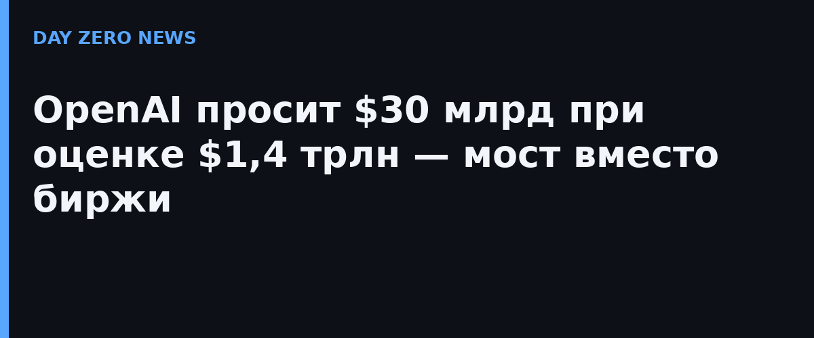

По данным Bloomberg (29 сентября), компания нацелилась минимум на $30 млрд инвестиций при оценке примерно $1,4 трлн — без учёта самих привлекаемых денег. Reuters подтверждает параметры со ссылкой на источники, знакомые с ходом переговоров, и подчёркивает: речь о ранней стадии, условия ещё могут измениться. Для сравнения: это превысило бы предыдущий рекорд компании и вывело бы OpenAI в клуб самых дорогих частных компаний мира.
Сделку позиционируют как «мост» до первичного размещения акций. Гендиректор Сэм Альтман ранее откладывал выход на биржу, ссылаясь на вопросы безопасности ИИ, — то есть компания продолжает финансироваться частным капиталом, а не через открытый рынок. Потребность в деньгах логична: обучение фронтир-моделей и дата-центры (например, проект Stargate) стоят десятки миллиардов долларов в год.
Зафиксированный факт — сам факт переговоров и озвученные цели ($30 млрд, ~$1,4 трлн), и то только со слов источников издания: ни OpenAI, ни инвесторы условия публично не подтвердили. Подписанных документов нет, а «утечки» про раунды OpenAI раньше уже меняли масштаб. Итоговую сумму, инвесторов и финальную оценку стоит считать гипотезой до официального анонса.